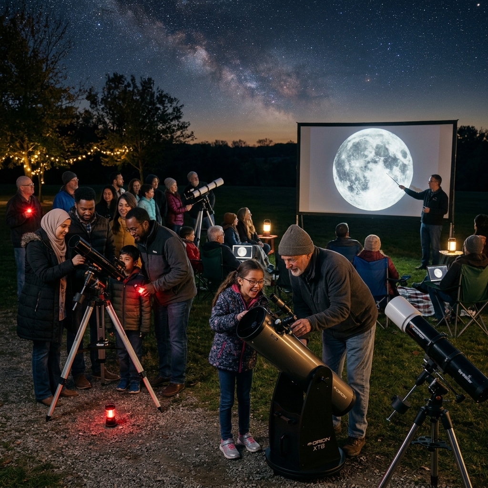

Our Celestial Mission
Founded by a group of passionate astronomers and educators, our mission is to make the wonders of the universe accessible to everyone. We believe that everyone should have the chance to see the rings of Saturn or the moons of Jupiter through a telescope.
Whether you're a student, a hobbyist, or an aspiring professional, we provide the tools, knowledge, and community to help you explore the cosmos.

Our Vision
Global Access
Bridging the gap between students and the stars across the globe through virtual classrooms.
Educational Excellence
Providing high-quality educational materials and hands-on workshops led by industry experts.
Scientific Discovery
Encouraging amateur astronomers to contribute to actual scientific research through citizen science projects.

Our Story
It started with a single telescope in a backyard. Our founder, Dr. Orion Starwell, saw the sheer excitement and wonder in his children's eyes when they saw the Andromeda Galaxy for the first time. He realized that this experience should be available to everyone, and כך Astronomy Academy was born.
Today, we have thousands of students and a network of remotely controlled telescopes throughout the world. Join us on this incredible journey.
Meet Our Founders & Experts


Our Network in Numbers
Global Observatories
Remote Telescopes
Active Students
Astro-Data Captured
Our telescopes are strategically located in dark-sky sites across Chile, Australia, and Namibia to provide 24-hour coverage of both the Northern and Southern celestial hemispheres.
Awards & Recognition
Certified by the International Astronomical Union (IAU) for educational excellence.

Community Outreach
We believe the stars belong to everyone. That's why we dedicate 15% of our telescope time to underprivileged schools and community science centers worldwide for free.
The Innovation Lab
Architecture of the future. Our technology lab is where we develop the custom sensors and robotic control algorithms that power our remote telescope network. We push the boundaries of what's possible in automated celestial imaging.
R&D Center
Silicon Valley, CA
Testing Site
Atacama, Chile
A Global Scientific Network
We don't work alone. Asclogy is proud to partner with over 50 universities, space agencies, and private aerospace firms to ensure our students have access to the most accurate data and the most advanced equipment on Earth.
Learning is Better Together
Our community is at the heart of everything we do. Beyond the lessons, our students form study groups, embark on physical stargazing trips, and collaborate on international research projects.
120+
Countries Represented
15k+
Active Forum Members